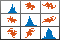

plotmatrix
Scatter plot matrix
- 
Syntax
Description
plotmatrix( is the same as
X)plotmatrix(X,X) except that the subaxes along the
diagonal are replaced with histogram plots of the data in the corresponding
column of X. For example, the subaxes along the diagonal in
the ith column is replaced by
histogram(X(:,i)). The tick labels along the edges of the
plots align with the scatter plots, not the histograms.
plotmatrix(___, specifies
the line style, marker symbol, and color for the scatter plots. The
option LineSpec)LineSpec can be preceded by any of the input
argument combinations in the previous syntaxes.
plotmatrix( plots
into the specified target axes, where the target axes is an invisible frame for
the subaxes.ax,___)
[ returns the graphic objects
created as follows:S,AX,BigAx,H,HAx]
= plotmatrix(___)
S– Chart line objects for the scatter plotsAX– Axes objects for each subaxesBigAx– Axes object for big axes that frames the subaxesH– Histogram objects for the histogram plotsHAx– Axes objects for the invisible histogram axes
BigAx is left as the current axes (gca)
so that a subsequent title, xlabel,
or ylabel command centers text with respect to
the big axes.
Examples
Create X as a matrix of random data and Y as a matrix of integer values. Then, create a scatter plot matrix of the columns of X against the columns of Y.
X = randn(50,3); Y = reshape(1:150,50,3); plotmatrix(X,Y)

The subplot in the ith row, jth column of the figure is a scatter plot of the ith column of Y against the jth column of X.
Create a scatter plot matrix of random data. The subplot in the ith row, jth column of the matrix is a scatter plot of the ith column of X against the jth column of X. Along the diagonal are histogram plots of each column of X.
X = randn(50,3); plotmatrix(X)

Create a scatter plot matrix of random data. Specify the marker type and the color for the scatter plots.
X = randn(50,3);
plotmatrix(X,'*r')
The LineSpec option sets properties for the scatter plots. To set properties for the histogram plots, return the histogram objects.
Create a scatter plot matrix of random data.
rng default
X = randn(50,3);
[S,AX,BigAx,H,HAx] = plotmatrix(X);
To set properties for the scatter plots, use S. To set properties for the histograms, use H. To set axes properties, use AX, BigAx, and HAx. Use dot notation to set properties.
Set the color and marker type for the scatter plot in the lower left corner of the figure. Set the color for the histogram plot in the lower right corner. Use the title command to title the figure.
S(3).Color = 'g'; S(3).Marker = '*'; H(3).EdgeColor = 'k'; H(3).FaceColor = 'g'; title(BigAx,'A Comparison of Data Sets')

Input Arguments
Data to display, specified as a matrix.
Data Types: single | double | int8 | int16 | int32 | int64 | uint8 | uint16 | uint32 | uint64 | logical
Data to plot against X, specified as a matrix.
Data Types: single | double | int8 | int16 | int32 | int64 | uint8 | uint16 | uint32 | uint64 | logical
Line style, marker, and color, specified as a string scalar or character vector containing symbols. The symbols can appear in any order. You do not need to specify all three characteristics (line style, marker, and color). For example, if you omit the line style and specify the marker, then the plot shows only the marker and no line.
Example: "--or" is a red dashed line with circle markers.
| Line Style | Description | Resulting Line |
|---|---|---|
"-" | Solid line |
|
"--" | Dashed line |
|
":" | Dotted line |
|
"-." | Dash-dotted line |
|
| Marker | Description | Resulting Marker |
|---|---|---|
"o" | Circle |
|
"+" | Plus sign |
|
"*" | Asterisk |
|
"." | Point |
|
"x" | Cross |
|
"_" | Horizontal line |
|
"|" | Vertical line |
|
"square" | Square |
|
"diamond" | Diamond |
|
"^" | Upward-pointing triangle |
|
"v" | Downward-pointing triangle |
|
">" | Right-pointing triangle |
|
"<" | Left-pointing triangle |
|
"pentagram" | Pentagram |
|
"hexagram" | Hexagram |
|
| Color Name | Short Name | RGB Triplet | Appearance |
|---|---|---|---|
"red" | "r" | [1 0 0] |
|
"green" | "g" | [0 1 0] |
|
"blue" | "b" | [0 0 1] |
|
"cyan"
| "c" | [0 1 1] |
|
"magenta" | "m" | [1 0 1] |
|
"yellow" | "y" | [1 1 0] |
|
"black" | "k" | [0 0 0] |
|
"white" | "w" | [1 1 1] |
|
Target axes that frames all the subaxes, specified as an
Axes object. If you do not specify this argument,
then plotmatrix uses the current axes.
Output Arguments
Extended Capabilities
Version History
Introduced before R2006aSee Also
scatter | scatter3 | tiledlayout | nexttile